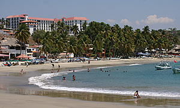

| PLAYAS |
||
|  | INFORMACIÓN Playas en Puerto Escondido Definitivamente Puerto Escondido es conocido mundialmente por sus imponentes olas, escenario ideal para quienes gustan de la práctica del surfing, sin embargo existen otras playas donde podrá disfrutar de olas tranquilas y suaves para disfrutar de los días soleados y con la familia. |
|
| ¡VISITANOS! Playa Zicatela. |
Practica de los mejores surfistas del mundo.
|
|